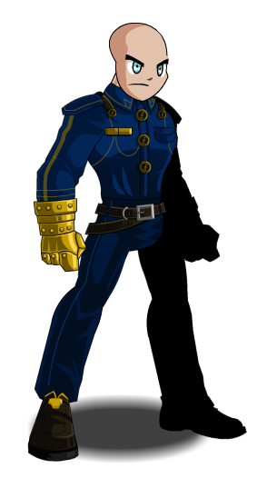
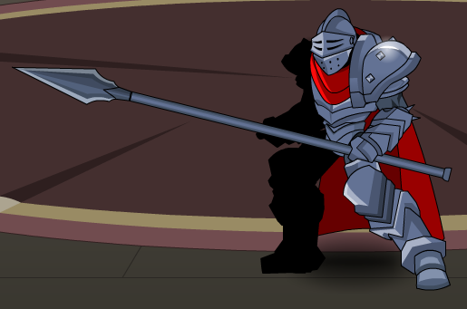

LAW 12
THUNDERCLOUT ONLINE
Edison Tang

Arrest is a main skill used by the Police class. Arrest can first be cast as an unblockable attack if the opposing player has a Warrant Tag.
In order to break this spell, If Arrest is cast, and the opposing player does not know why he/she is afflicted, a Police Class must respond
to questions about the casting in private message from the other player or risk having the Police Class lowered in rank.
Detain is another main skill used by the Police Class. When Detain is cast, attacks or griefing in the form of direct messages
to the Police Class will cause extra burn damage to your HP due to the Right of Silence ability that comes with Detain.
The server’s code also contains specifics on what commands are allowed and not allowed. This code has been written by the original devs
of the game and has been edited and debugged many times throughout the years in order to make the game as balanced as possible for all players.
In regards to how players are coded; lines 7 to 11 must first be examined in order to understand the dynamics between Police and all other players on the server.
To summarize what these lines of code do without being too complicated, line 7 indicates that all players have the right to
HP, freedom in the servers, and security of their account. Next, line 8 - 10 describe: the restrictions on unauthorized inventory searches from other players,
the casting of the spell Detain or Imprison must be reasonably disputed in the DMs after casting, and the casting of Arrest must be validated by a moderator
if the opposing player reports an error in casting. Finally, line 11 refers to the process of being afflicted with the effects of having Detain casted by a Police class,
in which the risk of having an account disabled is only to be determined by a moderator will reasonable evidence with the player being allowed to access until it is proven otherwise.
When Detain is cast, Police class must use direct message in order to inform the opposing player of why it is cast.
 Arrest is a main skill used by the Police class. Arrest can first be cast as an unblockable attack if the opposing player has a Warrant Tag.
In order to break this spell, If Arrest is cast, and the opposing player does not know why he/she is afflicted,
a Police Class must respond to questions about the casting in private message from the other player or risk having the Police Class lowered in rank.
Detain is another main skill used by the Police Class. This spell can only be cast when the opposing player does not When Detain is cast,
attacks or griefing in the form of direct messages to the Police Class will cause extra burn damage to your HP due to the Right of Silence ability that comes with Detain.
Why is remaining silent important while being detained?
Giving access for inventory search to a player with the police class is more common than you think it may be in many of the larger servers.
However, many players end up giving access to the police class despite having the “innocent tag” embedded, causing them to waste valuable time in timed quests.
This is usually do to the fact that players rarely see any information about this patch in most parts of the overworld and are usually too busy accomplishing
their daily quests to be informed. Although most players carry the Innocent Tag and can simply click “decline” to a search request, those who have a Warrant Tag or
Suspicion Tag will have the search executed automatically. During detainment, a player is transported to the Justice server and waits for 1 minute as the search executes.
The player must wait and cannot log off until the search has been completed to 100%. If the skill “arrest” is used on an S. Tag x4+ player, a Police Class executes a 5 minute
search in inventory and/or personal account information.
What is a Suspicion Tag?
A Suspicion Tag is used to indicate suspicious quests that a player encounters based on the choices they make in game.
The tag is indicated under a player’s username and can only be seen on the tagged player’s screen, but is visible to players with Police class: Rank 5.
Also, tags can be distributed by other players who see a player engage in suspicious activity and can be stacked in order to warn a Police Class player.
Once S.Tags stack to beyond x5, a Warrant Tag will automatically replace it.
Suspicious activity that may grant a player a Tag include:
Possessing Weapons/Potions that have been hacked, restricted by the server, along with the user having more than 2 S. Tags.
What is a Warrant Tag?
A Warrant Tag is a Suspicion Tag that has been stacked to x5 based on the quests and shop purchases that a player makes.
A Warrant Tag is indicated under the username, is highlighted red, can be seen publicly, and can only be erased through hacking
your account with a third party program. Any Police Class player is allowed to search your inventory based on the specifics of the
Warrant Tag only accessible to them. This is to ensure safety among the server.
What if I use an SP Fighter instead of walking through servers?
If a player uses an SP(Service Provider) Fighter, the Police Class skills differ. When a player simply clicks through the scrolling page to get to another area in the server,
a nearby Police Class can simply message and send a search request if they can click the username. However, while driving through online traffic,
the Police class are able to request a search along with checking if a player needs an update patch or is afflicted by potion from battle.
Again, a search request may be declined unless:
-You accept the request
-A Police Class has noticed that you have committed a crime against server law (DoT Driving or Overloading Others’ CPU)
-A Police Class casts “Arrest” on you
-You have 3+ Suspicion Tags
Arrest is a main skill used by the Police class. Arrest can first be cast as an unblockable attack if the opposing player has a Warrant Tag.
In order to break this spell, If Arrest is cast, and the opposing player does not know why he/she is afflicted,
a Police Class must respond to questions about the casting in private message from the other player or risk having the Police Class lowered in rank.
Detain is another main skill used by the Police Class. This spell can only be cast when the opposing player does not When Detain is cast,
attacks or griefing in the form of direct messages to the Police Class will cause extra burn damage to your HP due to the Right of Silence ability that comes with Detain.
Why is remaining silent important while being detained?
Giving access for inventory search to a player with the police class is more common than you think it may be in many of the larger servers.
However, many players end up giving access to the police class despite having the “innocent tag” embedded, causing them to waste valuable time in timed quests.
This is usually do to the fact that players rarely see any information about this patch in most parts of the overworld and are usually too busy accomplishing
their daily quests to be informed. Although most players carry the Innocent Tag and can simply click “decline” to a search request, those who have a Warrant Tag or
Suspicion Tag will have the search executed automatically. During detainment, a player is transported to the Justice server and waits for 1 minute as the search executes.
The player must wait and cannot log off until the search has been completed to 100%. If the skill “arrest” is used on an S. Tag x4+ player, a Police Class executes a 5 minute
search in inventory and/or personal account information.
What is a Suspicion Tag?
A Suspicion Tag is used to indicate suspicious quests that a player encounters based on the choices they make in game.
The tag is indicated under a player’s username and can only be seen on the tagged player’s screen, but is visible to players with Police class: Rank 5.
Also, tags can be distributed by other players who see a player engage in suspicious activity and can be stacked in order to warn a Police Class player.
Once S.Tags stack to beyond x5, a Warrant Tag will automatically replace it.
Suspicious activity that may grant a player a Tag include:
Possessing Weapons/Potions that have been hacked, restricted by the server, along with the user having more than 2 S. Tags.
What is a Warrant Tag?
A Warrant Tag is a Suspicion Tag that has been stacked to x5 based on the quests and shop purchases that a player makes.
A Warrant Tag is indicated under the username, is highlighted red, can be seen publicly, and can only be erased through hacking
your account with a third party program. Any Police Class player is allowed to search your inventory based on the specifics of the
Warrant Tag only accessible to them. This is to ensure safety among the server.
What if I use an SP Fighter instead of walking through servers?
If a player uses an SP(Service Provider) Fighter, the Police Class skills differ. When a player simply clicks through the scrolling page to get to another area in the server,
a nearby Police Class can simply message and send a search request if they can click the username. However, while driving through online traffic,
the Police class are able to request a search along with checking if a player needs an update patch or is afflicted by potion from battle.
Again, a search request may be declined unless:
-You accept the request
-A Police Class has noticed that you have committed a crime against server law (DoT Driving or Overloading Others’ CPU)
-A Police Class casts “Arrest” on you
-You have 3+ Suspicion Tags
What happens if a Police Class takes my base?
Police Class players can only take your base if it is being used to exploit the code in the game, which alters the server code
and changes the rules/commands to benefit that player.
However, the Police Class may not forcefully alter the settings to access your base as it will cause an error in their code.
Your account may also be deleted in the process if there is evidence that you violated the code.
How do I find a local defence lawyer?
Step 1: Ask yourself if you need a moderator.
If another player violates the game rules and causes your account or inventory to be affected,
(hacking, griefing in messages etc.) reporting the cause to a moderator to settle the dispute is always important to consider.
Moderators are here to help all players with any issues involving the game and to do there best to improve the experience.
If a case goes to be reviewed by the developers, a moderator is responsible for representing your report to them as developers are to not be biased.
Step 2: Find a moderator suited to settling the case.
Server Law and Sandbox Law are similar to Civil Law and Common Law, with different moderators or attorneys needed to represent both.
In game, Server Law is the equivalent of Common Law, in which more serious cases such as hacking accounts, leaking of unreleased in game items,
and hacking the game itself is under. Sandbox Law is the equivalent of Civil Law, in which smaller cases between players in their respective areas are enforced.
Sandbox Law can refer to griefing in messages or team killing.
Step 3: Contact a moderator in game as an NPC.
Moderators are also NPCs in many parts of the game and have relevance to the lore.
One example of a popular character is Sir Preszler, the Knight of Justice, who has leads a squadron of knights who settle cases for all players.
To find Sir Preszler on the map, type these coordinates: 49.137522200, -122.844719900 or use the hex decoder misc. item in your inventory to contact the squadron with the code
3737382D3830372D30323235.
link text

PLAY NOW